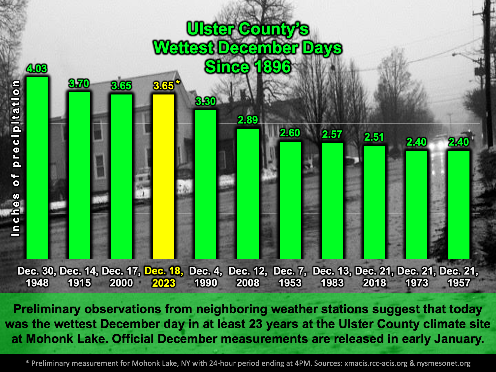

Another week, another round of rain
School Forecast
through Friday December 22nd
Last updated: 10:00PM Monday December 18, 2023
| 0% (Nope) |
|---|
| 0% (Nope) |
|---|
| 0% (Nope) |
|---|
___________________
10:00PM Update
Well, that's one way to start the week! Todays torrential rains amounted to 4.30 inches just across the river in Red Hook. Just to our south in High Falls 3.73 inches of rain was recorded. At the Ulster County climate station at Mohonk Mountain House, it is estimated that 3.65 inches fell, making today the wettest December day there in over 23 years and the third wettest since 1896! Oh - and this morning's high temperature of 64 degrees obliterated the previous record of 55 degrees that had been set in 1954.
Now that the storm has departed, tranquil weather will settle in for the remainder of the weak. Cooler air on the backside of the storm is already beginning to filter into the region as temperatures across western and central New York are currently up to 15 degrees cooler than they were 24 hours ago. This cooler air has been responsible for light snow reaching as far south as Tennessee and North Carolina today. Through Friday we can expect dry weather with mostly clear skies. Temperatures will be near normal with the afternoon highs reaching the lower 40s and overnight lows falling into the 20s. Next shot at rain or snow won't be until next week.
Next Update:
On Thursday
-Ethan
KingstonSnows | Kingston, New York
Website built by Ethan Burwell